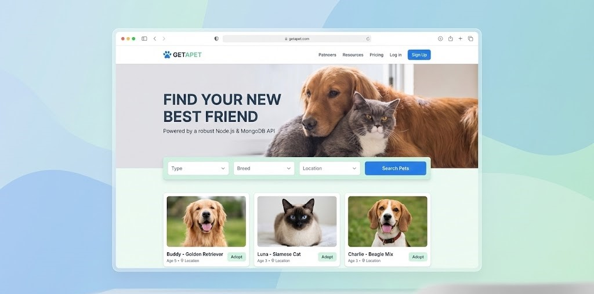
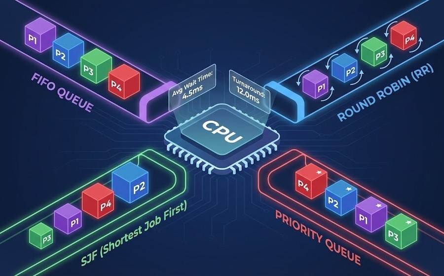
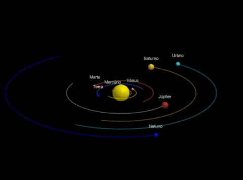

Retold é a galeria definitiva para criadores — um espaço onde seus projetos se tornam um portfólio visual vivo, e onde talento é reconhecido pelo que você construiu, não apenas pelo que escreveu.
200 currículos, 15 minutos, e um recrutador sem contexto técnico tentando adivinhar quem realmente é bom. Do outro lado, semanas de trabalho transformadas em blocos de texto que quase ninguém lê. Pessoas talentosas passam despercebidas. Empresas contratam errado. Todos perdem.
Imagine um espaço onde cada projeto seu tem sua própria página
visual: capa impactante, fotos e vídeos visíveis, descrição clara,
links funcionais.
Um layout que fala por você antes da entrevista começar. Seja você
um programador, videomaker, designer, escritor ou qualquer outra
profissão, Retold está aqui para você.



Transformamos a conversa sobre competência técnica — para quem cria e para quem contrata.
Foque em mostrar o que você realmente sabe fazer. Nós cuidamos de levar o seu trabalho até quem toma decisões.
Acabe com a triagem de centenas de PDFs genéricos. Tenha acesso a talentos já validados pelos projetos que entregam.
Se você é um profissional cansado de espalhar seu portfólio por vários
sites, ou uma empresa exausta de contratar apenas com base em
currículos, deixe seu e-mail.
Vamos compartilhar cada etapa da construção.
Tudo o que você precisa saber sobre o Retold.
O Retold é uma plataforma projetada para desenvolvedores e criadores de software construírem um portfólio visual e interativo. Diferente de um currículo estático ou um repositório de código puro, focamos em contar a história de cada projeto com imagens, vídeos, descrições claras e links funcionais, tornando seu trabalho fácil de ser entendido por recrutadores e clientes.
Sim! Nossa missão é ajudar talentos a serem descobertos. O Retold terá um plano gratuito robusto que permite criar seu perfil e exibir seus principais projetos sem custo algum. No futuro, planejamos recursos premium opcionais para quem busca funcionalidades avançadas de personalização e análise.
O Retold agiliza a triagem técnica. Em vez de analisar centenas de currículos em PDF, os recrutadores podem navegar por uma galeria visual de projetos reais. Isso permite avaliar a qualidade do trabalho, o domínio da stack tecnológica e a capacidade de entrega do candidato em segundos, antes mesmo da primeira entrevista.
Não, ele os complementa. O GitHub é essencial para mostrar o código fonte, e o LinkedIn para sua rede profissional. O Retold preenche a lacuna entre os dois: ele é a "camada de apresentação" visual que explica o que seu código faz e qual problema ele resolve, algo que o GitHub sozinho não faz bem para um público não técnico.
Estamos em fase ativa de desenvolvimento! Ao se inscrever na lista de espera acima, você será o primeiro a saber sobre o lançamento da versão beta e receberá atualizações exclusivas sobre nosso progresso.